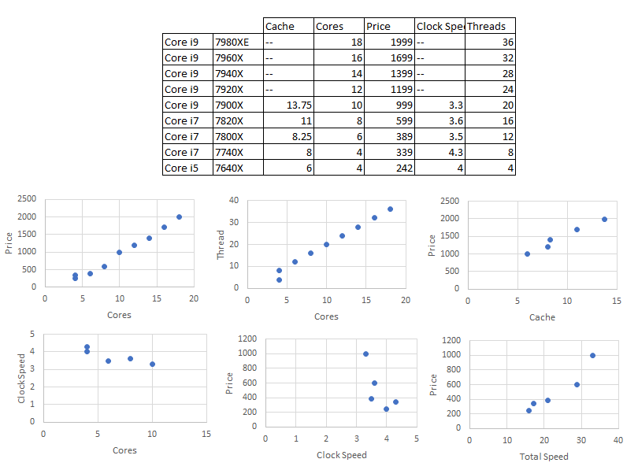
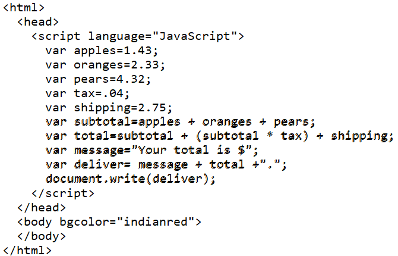
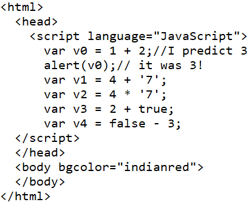
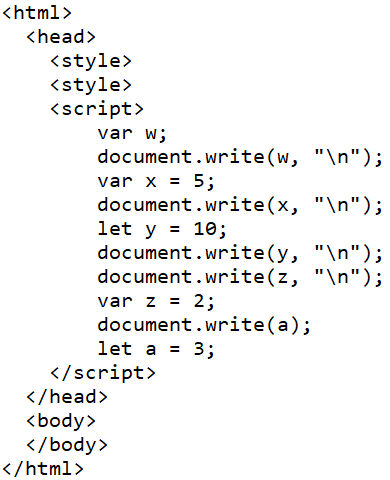

- Use web resources to find uses for octal and hexadecimal numbers.
Link Octal is used in older computers with a different architecture, aircraft transponders, and file permissions. There are others, but Hex does those better (i.e. number compression).
Link Hex is used in memory addresses, MAC addresses, and colors.
- Give examples of circumstances where binary would be preferable? Decimal?
Binary is unweildy, but in a computer it just makes sense. So if you want to use the number in a computer, that's the best choice. I'm thinking about 8-bit cables.
Decimal is the number system of humans, so i wouldn't want to confuse people using anything else. Showing a number '101' shouldn't be five. That would confuse people who are expecting one-hundred-and-one.
- Go to the Smithsonian site (https://www.si.edu/spotlight/cash-and-credit-registers/ncr-mechanical-cash-registers-cash-register-mechanisms (Links to an external site.)) on antique cash registers using decimal digits with places. You may choose to read about several in order to answer the following questions.
- Why were their multiple rows of numbered keys?
Each row had a place value and the various keys had to be used to give a value in that place.
- How did these machines work?
They were mostly physical. Gears and wheels. No electronics. Some paper punches.
- Was this an efficient design?
It takes up so much keyboard space but it does work. It only does one trick and couldn't be reprogrammed without changing the gears.
- Go to the Calculator Site (https://www.thecalculatorsite.com/articles/units/history-of-the-calculator.php (Links to an external site.)) on antique calculators. Answer these questions.
- What was the major innovation between the ENIAC and the ANITA?
They were moving away from mechanical machines and went to all electric. Fewer breaking parts.
- What was the major innovation between the ANITA and machines like the Olivetti Programma 101?
They were moving away from bulbs and tubes and more toward electronics. Transistors were working.
- How are these innovations related to binary?
The bulbs were either on/off and that worked for binary. The transistors did the same thing. Open or closed. On or off. That's how you get binary and these electronic circuits were moving toward an all electronic binary representation of data.
- Watch this video on the history of digital computing. (https://www.youtube.com/watch?v=OwS9aTE2Go4) Answer these questions.
- What feature of the vacuum tube made binary computing possible?
They could be turned on/off and they could be turned on/off by other signals. That gave us a near-transistor logic control.
- What were the disadvantages of the vacuum tube?
They burn out so easily. Sometimes it was hard to keep the tubes up and running over a single computation.
- What feature of silicon made binary computing possible?
It can be doped to give it different electronic properties. Different sections with different capabilities.
- The author argues that the growth experienced during the age of computers may plateau in the next few years. Why?
They are quickly reaching the limit of doping in size. At a small enough size the electrons will bleed through incorrectly.
- Convert these mathematical operations to binary, octal, and hexadecimal.
- 126 + 39 =
126%2=0
63%2=1
31%2=1
15%2=1
7%2=1
3%2=1
1%2=1
0111 1110
7E - hex
176 - octal |
39%2=1
19%2=1
9%2=1
4%2=0
2%2=0
1%2=1
0010 0111
27 - hex
47 - octal
|
- 96 + 29 =
96%2=0
48%2=0
24%2=0
12%2=0
6%2=0
3%2=1
1%2=1
0110 0000
60 - hex
140 - octal
|
29%2=1
14%2=0
7%2=1
3%2=1
1%2=1
0001 1101
1D - Hex
035 - octal
|
- 117 + 85 =
117%2=1
58%2=0
29%2=1
14%2=0
7%2=1
3%2=1
1%2=1
0111 0101
75 - hex
165 - octal
|
85%2=1
42%2=0
21%2=1
10%2=0
5%2=1
2%2=0
1%2=1
0101 0101
55 - hex
125 - octal
|
- Convert these mathematical operations to decimal
- AF + 39 =
AF
1010 1111
128 + 32 + 8 + 4 + 2 + 1 = 175
|
39
0011 1001
32 + 16 + 8 + 1 = 57
|
- 0110 1001 + 0011 1101 =
0110 1001
64 + 32 + 8 + 1 = 105
|
0011 1101
32 + 16 + 8 + 4 + 1 = 61
|
- (octal) 35 + (octal) 113 =
35
011 101
01 1101
16 + 8 + 4 + 1 = 29
|
113
001 001 011
0100 1011
64 + 8 + 2 + 1 = 75
|
- Create a truth table for the following expressions
- A && B && C
| A | B | C | A&&B&&C |
|---|
| 0 | 0 | 0 | 0 |
| 0 | 0 | 1 | 0 |
| 0 | 1 | 0 | 0 |
| 0 | 1 | 0 | 0 |
| 1 | 0 | 0 | 0 |
| 1 | 0 | 1 | 0 |
| 1 | 1 | 0 | 0 |
| 1 | 1 | 1 | 1 |
- (A && !B) || C
| A | B | C | !B | A&&!B | (A&&!B)||C |
|---|
| 0 | 0 | 0 | 1 | 0 | 0 |
| 0 | 0 | 1 | 1 | 0 | 1 |
| 0 | 1 | 0 | 0 | 0 | 0 |
| 0 | 1 | 1 | 0 | 0 | 1 |
| 1 | 0 | 0 | 1 | 1 | 1 |
| 1 | 0 | 1 | 1 | 1 | 1 |
| 1 | 1 | 0 | 0 | 0 | 0 |
| 1 | 1 | 1 | 0 | 0 | 1 |
- A && !B && !A
| A | B | !A | !B | A&&!B&&!A |
|---|
| 0 | 0 | 1 | 1 | 0 |
| 0 | 1 | 1 | 0 | 0 |
| 1 | 0 | 0 | 1 | 0 |
| 1 | 1 | 0 | 0 | 0 |
- A || (C && B) || !A
| A | B | C | !A | C&&B | A||(C&&B)||!A |
|---|
| 0 | 0 | 0 | 0 | 0 | 1 |
| 0 | 0 | 1 | 0 | 0 | 1 |
| 0 | 1 | 0 | 0 | 0 | 1 |
| 0 | 1 | 1 | 0 | 1 | 1 |
| 1 | 0 | 0 | 1 | 0 | 1 |
| 1 | 0 | 1 | 1 | 0 | 1 |
| 1 | 1 | 0 | 1 | 0 | 1 |
| 1 | 1 | 1 | 1 | 1 | 1 |
- Read the description of all computer parts on this site. https://manishacinfotech1112.weebly.com/parts-of-a-computer-assignment.html In your own words, describe two computer parts that we did not cover is class. Why are these parts necessary on a desktop computer? Are they as important in a laptop or phone?
- Go searching for a "dream" computer you would buy if you had as much money as you need. Nothing crazy. It's for your use not for hacking into NORAD. Describe the details of the machine.
- Weight - Under 20lbs; this is a must
- Size - Average backback; 12"x17"x2"
- CPU type - Don't care
- CPU cores - Minimum 10 cores so I can put off OS processes without losing performance
- CPU Gigahertz - Total CPU is 5-7GHz
- RAM capacity - Minimum 16 GB
- Hard drive type - SSD
- Hard drive capacity - 1 TB - I don't need the space, but that's a common size and good price today
- Video card type - Not too bothered
- Looking at your dream computer, what job do you think it is best able to perform and why?
- Office work
- Games
- Streaming video/audio
- Something else?
I'm just looking for a workhorse, not a racehorse. Some games, but nothing important. Lots of memory space for work documents, images, etc. No high processing.
- Recently Google has started offering Chromebooks. Look up the CPU capabilities, RAM storage, and hard drive storage on a chrome book. Compare with a desktop computer of any brand. What explanation is there for the Chromebook? How was it meant to be used?
Chromebook: 4GB RAM; 2 Cores, 2.5GHz; 16GB SSD; Bluetooth; Webcam
Old Desktop: 4GB RAM; 2 Cores, 3GHz; 930GB SSD; Ethernet; DVD Drive
Obviously this is an old computer, but you can see that speed and RAM are very similar. The auxiliaries are different with Chromebook favoring networking and distance communications. I use my desktop for work and rarely any socializing. The big difference is I have tons of memory, but the chromebook has hardly any. I can keep all kinds of files and they practically can't do anything.
- Go to this site https://www.makeuseof.com/tag/intel-core-i9-vs-i7-vs-i5-cpu/ and compare the i7 and i9 chips.
- Look at the number of cores and compare them to price. What can you say about the price of new cores.
Cores and price are positively correlated. About $100/core.
- Compare cores to "threads". Each thread is a computer program that can be run at the same time on a core. What relationship do you see between cores and threads.
They are locked 2:1.
- What relationship do you see between cache size and price?
Less closely correlated. About $100/MB
- What relationship do you see between clock speed and price?
This one has no apparent relationship. Slight negative correlation, but poor R^2.
- What relationship do you see between cores and base clock speed?
Again, slight negative correlation, but poor R^2. It's about flat.

- From the data in question 5, calculate the total Ghz speed of each chip. That is (base clock speed)x(cores). Compare that number with price. What relationship do you see?
This correlation makes much more sense. By combining the cores and base speed you get $40/GHz.
- Watch this video https://www.youtube.com/watch?v=EhvJRDJaofQ. Write a three paragraph response. Cover these two topics.
- Are the computer component options clearer now? Less clear? Some of them?
- Given these options would you rather build your own computer or buy one ready made?
He points out that most people just look at the i-number and go with the newest, highest, or best. He is trying to compare very minor differences between virtually the same chips. I'm less worrried about that. I just want the CPU to have a good rate and more than one core so I don't have to interrupt my application to deal with the OS. I'd be happy to sacrifice some capability for a much cheaper chip.
I agree with him that 4GB is very little. 8GB is a good number. 16GB is also readily available today and I'd rather have a slightly larger workspace inside the computer. I'm less concerned about frequency and latency. Those are differences that only matter when I need millisecond/nanosecond speed differences. Again, I'd happily save money in this area.
This video is a little dated. Today, Windows 10 is just about the same for everyone. The main difference is the licenses paid for with Office 365. We don't need much of a difference in OS based on a $100/year subscription to the Office applications.
- Knowing about computer parts and architecture is essential to Computer Engineering. This is different from Computer Science which deals with programming the computer to do something and largely ignores the hardware. Which of these areas interests you more. Why?
Ha! I hate the hardware. I'm all about the programming. Should be obvious by my career path. I killed three computers before I gave up.
Lab 2
- Create a new HTML page and do the following in the script tag.
- Declare a set of five fields for your characteristics at right. You can name them whatever you want.
- Use let for at least one variable.
- Use var for at least one.
- Use neither for at least one.
- Define the value for each field.
- Use the alert function e.g. "alert(fieldname);" to check the values of all fields.
- Use alert before the fields are declared.
- Use alert between declaration and definition.
- Use alert after definition
- You will get errors. Put // double slash in front of the line that caused the error.
- After each set of alerts, use the // double slash on a blank line and write your own comments about why their were errors and what you see.
See script on this page
- In the same file, add functions by doing the following:
- Declare new fields for grades and the number of courses.
- Both should be defined with a value of 0.
- Write a function that:
- Takes in a four point grade as a parameter.
- Adds 1 to the number of courses.
- Adds the grade parameter to the grades field.
- Write another function that:
- Takes no parameters.
- Calculates the current GPA.
- Uses alert to publish the current GPA.
- Test the functions by adding several grades.
- (Extra credit) Can you break the program? Show how you would do so in a separate copy of the file.
- Implement Program #1.
- What is written by this document?
- Create a function that has parameters for the number of each fruit.
- Have the function do everything in bold based on those parameters.
- Call the function with the following parameters:
- 1 apple, 1 orange, 1 pear
- 3 apples, 2 oranges, 1 pear
- 1 apple, 3 oranges, 2 pears

4. Implement Program #2
Recreate this page.
After each variable:
Write comments predicting the value.
Use the alert function to check the contents.
Use comments to write what you actually got.
The first one is done for you.

5. Implement Program #3
After each “document.write” call, use comments to predict the output.
